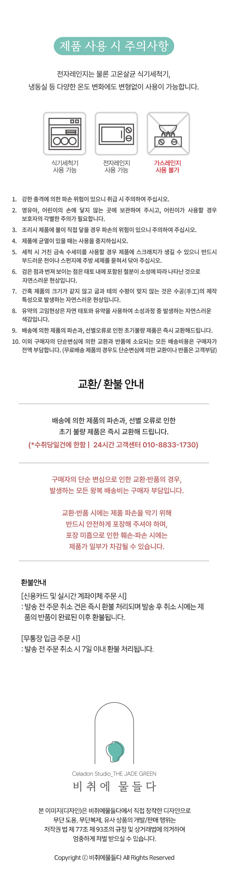
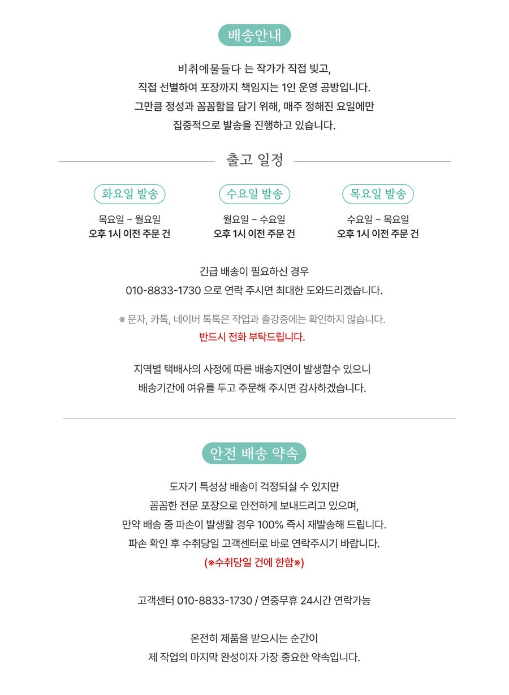

사용·세척 방법부터 출고 일정, 교환·환불, 청자 용어집까지


| 한국어 | English | 日本語 | 中文 |
|---|---|---|---|
| 청자 | Celadon | 青瓷 | 青瓷 |
| 비색 | Celadon Blue-Green | 翠色 | 翠色 |
| 상감 | Sanggam Inlay | 象嵌 | 象嵌 |
| 운학문 | Cloud and Crane | 雲鶴文 | 云鹤文 |
| 매병 | Prunus Vase | 梅瓶 | 梅瓶 |
| 주병 | Wine Bottle | 酒瓶 | 酒瓶 |
| 달항아리 | Moon Jar | 大壺 | 大壶 |
| 무균열 | Crack-free | 無貫入 | 无开片 |
| 보자기 | Bojagi (wrapping cloth) | 風呂敷 | 包袱布 |
| 낙관 | Artist's seal | 落款 | 落款 |